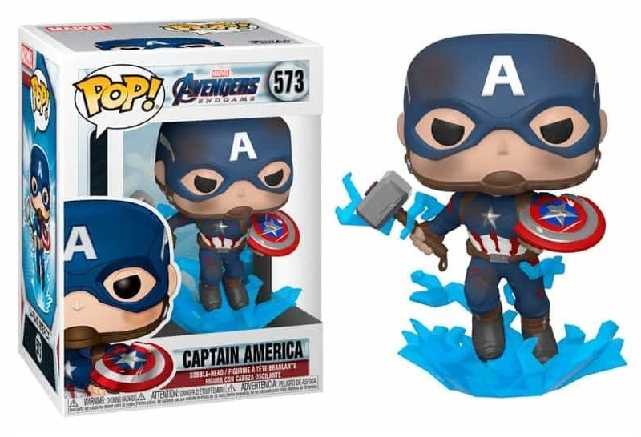
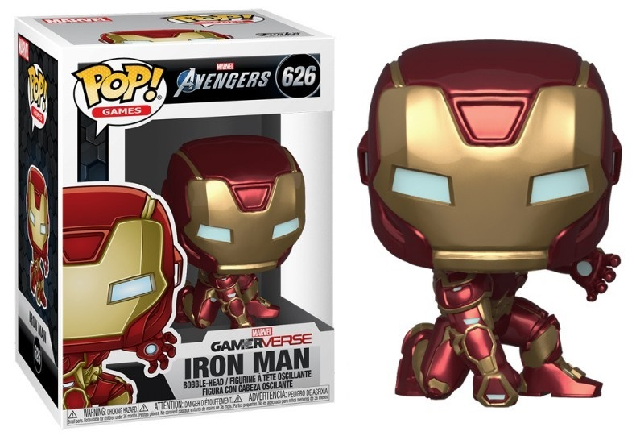
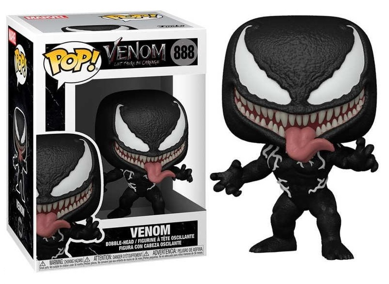

Categorías
Buenas Fanatico de los funkos, continuamos con el descubrimiento de los Funko, estos cabezones de la cultura Pop que nos deleitan con su versión de nuestros personajes favoritos. Debido a la gran variedad de Funko Pop y más de mil licencias en su poder, estos se dividen en categorías, que son las encargadas de llevar orden en sus números, por eso vemos varios números en las cajas de Funko Pop que a veces no se entienden, pero nosotros te lo explicamos.
¿Qué significa el número de los Funko Pop?
Todos los Funko Pop tienen en la parte superior derecha de la caja un número que lleva el orden de las colecciones. Con el número del Funko Pop, se puede identificar la antigüedad de la figura de colección. Pero eso no quiere decir que solo exista un Funko Pop número 1, porque el numero también depende de la categoría y estas se dividen así:
Tipos de funkos
Funkos de superheroes
Esta es una de las categorías principales que tiene el universo Funko,los superheroes, abarca tanto heores como villanos tanto de comics, como de películas y series, existen numerosos tipos.
